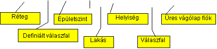
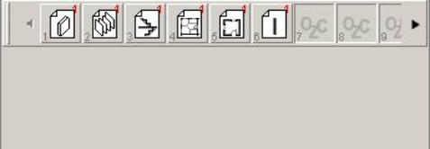

A Instal-heat&energy egy többdokumentumú program, de a program egyszerre csak egyszer nyitható meg. A több terven való munka azt jelenti, hogy egyidejûleg egynél több terv is nyitva lehet, valamint lehetõség van a megnyitott tervek közt való átkapcsolásra és az adatok szabad átvitelére közöttük. Mégis vannak azonban a komputer operációs rendszerébõl következõ korlátok. A Windows 98 és a Millennium operációs rendszerek maximum két dokumentum megnyitását teszik lehetõvé egyidõben.
A program sok könnyítést biztosit a program elemeinek, mint pl. a rétegeknek, térelhatároló szerkezet definícióknak, a helyiségekben használ térelhatárolóknak és maguknak a helyiségeknek a másolásakor és áthelyezésekor. A helyiségek fûtésével kapcsolatos elemeket, mint pl. a radiátor, nem lehet másolni vagy áthelyezni.
A vágólap létezésének köszönhetõen a programban lehetõség van az elemeknek a tervek közti egyszerû másolására és áthelyezésére. Továbbá lehetõség van az elemek közvetlen másolására és átvitelére az egyik tervbõl a másikba. Gyorsan válthatunk a tervek közt a Ctrl+Tab billentyûkombináció segítségével a szerkesztési folyamat bármely pillanatában.
A fõmenüben az "Ablak" pozíció választásával lehetõség van a több terven való munkának a tökéletesítésére, és rendszerezésére a következõ menük segítségével:
- Mozaikszerû elrendezés – hatására az összes megnyitott terv ablaka egymásra helyezve rendezõdik oly módon, hogy az ablakok széle a terv nevével együtt látszódjon.
- Ikonok elrendezése – ha valamely ablakok kis méretben szerepelnek, és a képernyõ tetszõleges részén helyezkednek el, akkor ezen menü segítségével ezek ikonjait a fõablak munkaterületének alsó részén lehet elrendezni.
- Következõ – ezen funkció meghívása a következõ megnyitott terv ablakának megjelenítését eredményezi.
- Elõzõ – ezen funkció meghívása az elõzõleg megnyitott terv ablakának megjelenítését eredményezi.
- Összes kis méretbe – hatására az összes terv ablakának kis méretre való váltása történik, és a fõablak munkaterületének alsó részén kerülnek elrendezésre.
- Összes bezárása – hatására az összes megnyitott terv bezárásra kerül. Ha bármely terv nem került elmentésre a lemezre a bezárás elõtt, akkor a program megkérdezi, hogy elmentsen-e a bezárás elõtt.
Alapvetõ megkönnyítése a több terven való munkának a program vágólapja, amely magába foglalja a vágólap celláit. Ebben lehetõség van tetszõleges rétegek, definiált térelhatárolók, szintek, lakások, helyiségek valamint a helyiségek térelhatárolóinak elhelyezésére és elmozgatására. A vágólap a kicserélendõ adatok megõrzésére szolgál, aminek köszönhetõen könnyen végrehajtható az adatok mozgatásának mûvelete egy terven belül, vagy egyik tervbõl a másikba. A vágólapon szintén lehetõség van a leggyakrabban felhasznált elemek tárolására azért, hogy azok felhasználhatóak legyenek egy új terv létrehozásánál, vagy egy már elmentett terv módosításakor. A vágólap tartalmát a program addig õrzi meg, amíg azt nem töröljük. Még a programon való munka, és a számítógép kikapcsolása után is megmarad.
A megõrzött adatok típusát a felhasználó az azokat megkülönböztetõ ikonokon ismerheti fel, amelyek minden elemtípusra különböznek.


Minden sorrendben következõ cella számozott sorrendben egytõl százig. Ily módon a vágólapra bevihetõ legtöbb elem száma száz. A képernyõ megjelenített területén nem elférõ cellára történõ váltáshoz az "Elõzõ", vagy a "Következõ" gombokra kell kattintani, amelyek a vágólap szélein találhatóak.
Az elemek vágólapra való másolása a tervrõl oly módon történik, hogy az elemet, vagy elemek csoportját kijelöljük, és elhúzzuk (nyomva tartva az egér jobb gombját) a vágólap kiválasztott cellájába. A másolás elvégzésérõl egy kis jel tájékoztat az elem ikonjánál
Az elemek vágólapra való áthelyezése a tervrõl oly módon történik, hogy az elemet, vagy elemek csoportját kijelöljük, és a Shift billentyû nyomva tartása mellett elhúzzuk (nyomva tartva az egér jobb gombját) a vágólap kiválasztott cellájába. Az áthelyezés elvégzésérõl egy kis jel tájékoztat az elem ikonjánál.
A fent említett mûveletek fordított irányban is végrehajthatóak – a vágólapról ugyanazon, vagy más megnyitott tervbe. Ilyen esetben az egyidejûleg megjelenõ felbukkanó menüben meg lehet erõsíteni a másolási vagy az áthelyezési mûveletet.
A vágólap kiválasztott cellájára állva az egér mutatójával megjelenik annak tartalma – az elemek száma, az elemtípus(ok) leírása, valamint az annak típusától függõ, táblázatban összegyûjtött többi adat.
A vágólap kiválasztott cellájára kattintva az egér mutatójával megjelenik a másolt, vagy az áthelyezett elemek száma.
Az eszközsávhoz hasonlóan lehetõség van a vágólap képernyõn való elhelyezkedésének, valamint a méretének a megváltoztatására is.
A vágólapnál a következõ tevékenységek állnak rendelkezésre az egér jobb gombjával meghívott a felbukkanó menüben:
- Törlés – biztosítja a vágólap kiválasztott cellájának eltávolítását,
- Rendezés – biztosítja a vágólap cellái a tartalmának az elrendezését sorrendiségük alapján,
- Elrejtés – hatására a cella bezáródik. Az ismételt megjelenítés a >>"Nézet/vágólapok"<< menüpot meghívásával lehetséges,
- Mindent töröl – hatására eltávolításra kerül a vágólap teljes tartalma.